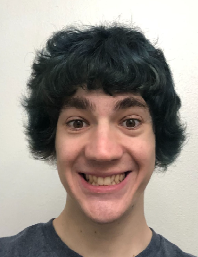

INTRODUCTION

- Personal background: I’m from Cary.
- Professional: Minimum wage jobs at Dunkin Donuts and Lowes Foods.
- Academic background: Graduated from Green Hope high school in Cary and took 2 years at UNC Charlotte.
- Background in the subject matter of this course: I’ve planned for a career in programming for about 6 years. I’ve taken classes in Visual Basic, C#, Unity, and Java.
- Primary Computer Platform: Windows 11
- Courses I'm taking and reason for each:
- SPAN3201 - Advanced Grammar and Composition: Taking to get a minor in Spanish and to improve my Spanish ability
- ITIS3130 - Human Centered Design: Taking to major in Computer Science
- ITIS3200 - Intro to Info Security and Privacy: Taking to major in Computer Science
- STAT1220 - Elements of Statistics I: Taking to major in Computer Science
- ITIS3135 - Web App Design and Development: Taking because I love my professor so much!